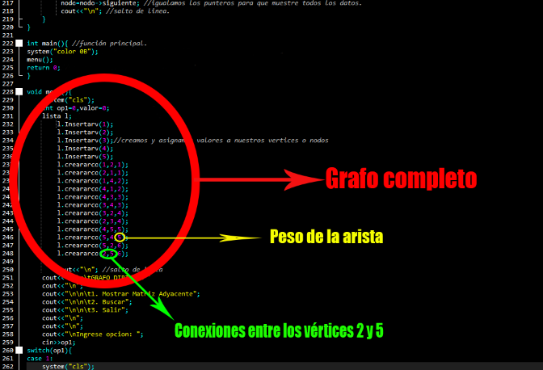
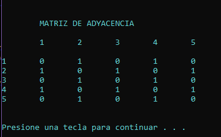

El siguiente código tiene la función de mostrar al usuario la existencia de un nodo o vértice existente dentro del grafo, así como la matriz de adyacencia, el grafo fue introducido desde la construcción del código, dicho grafo está marcado con un círculo rojo de la imagen de la derecha

Imagen 1.1
Finalmente podemos observar en las siguientes imágenes la ejecución de las dos funciones principales del programa, mostrando la matriz de adyacencia y búsqueda de un vértice. En la parte de abajo se encuentra el código para que usted pueda modificar los valores de los vértices, sus conexiones y pesos, de esta manera podrá observar la matriz de adyacencia asociada y buscar sus vértices de manera personalizada. Se recomienda usar el IDE “Dev C++”.
La matriz de adyacencia asociada al grafo de la imagen 1.1

Búsqueda del vértice 9 (Este vértice no existe dentro del grafo)